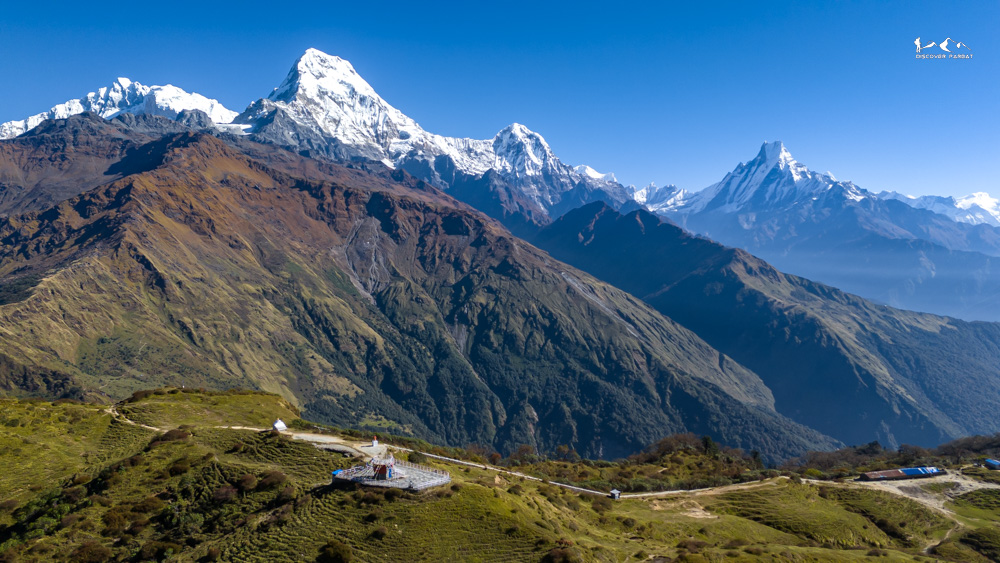

6-day trek linking Dobato, Muldai, Poon Hill and Kokhe Danda, with quiet ridges, Annapurna and Dhaulagiri views and a village homestay finale


The Short Multiple Viewpoints Trek is a 6-day, moderate trek from Pokhara that links four Himalayan viewpoints: Dobato, Muldai (3,536 m), Poon Hill and Kokhe Danda. It starts in the Gurung village of Ghandruk, climbs through rhododendron and oak forest to the quiet ridges above Tadapani, crosses Ghorepani and Poon Hill, then continues into Parbat district and finishes with a homestay night in the Magar village of Lespar.
The first day begins with a drive to Ghandruk, one of Nepal's best-known Gurung villages, with slate-roofed stone houses, terraced fields and views of Annapurna South and Machhapuchhre above the Modi Khola valley. From there the trail climbs through forest to Tadapani, a ridge-top settlement where the main trekking crowds start to thin and morning views open onto Annapurna South and Hiunchuli.
Above Tadapani the route leaves the busy trails behind. Dobato, at about 3,500 m, sits on an open ridge facing Annapurna South, Fang and Machhapuchhre. A 25-minute walk higher, Muldai Viewpoint is the highest point of the trek, and at sunrise the panorama stretches from Dhaulagiri across the Annapurna range to Manaslu, usually with only a handful of other trekkers. These two nights are the quiet heart of the trek.
From Muldai the trail descends to Ghorepani. Most trekkers climb Poon Hill in the dark for sunrise; we go after breakfast instead, when the crowds have gone down and the viewpoint is almost empty. The full Dhaulagiri and Annapurna panorama is still there, without the queue.
Where the standard Poon Hill loop turns back, this route keeps going into Parbat. The trail climbs through rhododendron forest to Kokhe Danda, the highest point of Parbat district, on a trail opened by us at Discover Parbat. It sees very few trekkers, and the sunrise from the ridge reaches from Dhaulagiri and Annapurna as far as Langtang on clear days.
The last night is in Lespar, a traditional Magar village of terraced fields and stone-and-mud houses. You can explore the village, chat with locals and join a momo-making session with your host family before dinner. The next morning we walk via Haljure down to Banau and drive back to Pokhara through Kushma, a riverside town above the Kali Gandaki gorge.
Our guides are local to Parbat and know the families, villages and trails along the route. The Short Multiple Viewpoints Trek suits trekkers with limited time who want famous viewpoints and quiet, off-the-beaten-path ridges in a single trip.
Watch: Short Multiple Viewpoints Trek – Dobato, Muldai, Poon Hill and Kokhe Danda in 6 days
You want Dobato, Muldai, Poon Hill and Kokhe Danda in a single connected journey
You have 6 days and want a varied route of forests, high ridges and traditional villages
You like combining famous highlights like Ghandruk and Poon Hill with quiet, off-the-beaten-path sections
You love authentic village life, home-cooked food and local culture
You only have 3 to 4 days. Try the Short Kokhe Danda Trek instead
You expect well-equipped teahouses with hot showers and Wi-Fi every night
Best time: October and November give the clearest views for the sunrises at Muldai and Kokhe Danda, and March to May brings rhododendron blooms through the forest sections. June to September is monsoon and not recommended. See our month-by-month guide to trekking in this region.
Cost: the trek costs $420 to $500 per person depending on group size. It includes private transport, meals, accommodation, guide and porter, and the ACAP and TIMS permits. See the cost table.
Getting there: we drive from Pokhara to Ghandruk in about 2.5 hours and start walking the same day. The trek ends at Banau, with a taxi or jeep back to Pokhara via Kushma in about 2.5 hours.
Other options: want more time on the ridges? See the full Multiple Viewpoints Trek. Prefer a quieter, homestay-only route? Try the 5-day Kokhe Danda Trek, or read why Kokhe Danda is a better alternative to Poon Hill.
Morning drive from Pokhara to Ghandruk, about two and a half hours (43 km). After a short tea break in Ghandruk, we start our hike to Tadapani. After around two and a half hours we reach Bhaisikharka, where we stop for lunch, then walk another hour on a gradual uphill trail to Tadapani. Today's trail passes through beautiful rhododendron forest.
We wake up early for sunrise. In clear weather, Annapurna South, Hiunchuli and Machhapuchhre (Fishtail) are visible from Tadapani.
After breakfast, we hike towards Dobato through rhododendron and oak forest. The trail is gradual at first, then steeper from Meshar up to Isharu, where we stop for lunch. Another one and a half hours brings us to Dobato, where we stay at Hotel Dobato ViewTop. If the weather is clear, we can hike up to Muldai for sunset.
We wake up early and hike around 25 minutes to Muldai Viewpoint for sunrise, with views of the Dhaulagiri, Annapurna and Mansiri ranges. We then walk back down to the tea house for breakfast.
After breakfast, we continue to Ghorepani. We climb back up past Muldai Viewpoint and then trek downhill for a couple of hours to Deurali, where we stop for lunch. From there, a short gradual uphill leads onto the ridgeline that we follow to Ghorepani.
Unlike most trekkers, we don't start early for Poon Hill; we go after breakfast instead. It is an hour's uphill climb on stone steps, and by the time we arrive the viewpoint is almost empty, so we have it nearly to ourselves. We then descend to Phulbari for lunch and climb through rhododendron forest to Kokhe Danda, the highest point of Parbat district.
We wake up early for the first sunrays over the Dhaulagiri and Annapurna ranges. On a clear day, the view extends all the way to Langtang Lirung and even Numbur in the lower Everest region.
After breakfast, we hike to Lespar. The trail is mostly flat or gently downhill to Dhima Danda, then descends to Jaljala and follows stone steps all the way down to Lespar. After lunch, we explore the village, and in the evening we can join a momo-making session with our host at the homestay.
After a local breakfast, we hike to Banau via Haljure: an hour uphill at first, mostly flat to Haljure, then another hour downhill to Banau. From Banau, we take a taxi or jeep back to Pokhara with a stop at Kushma, a total drive of about two and a half hours.
Yes. The trek is rated Moderate and is well within reach for fit beginners. Most days involve 5–6 hours of walking, and Day 3 is the longest, with the sunrise hike to Muldai before the descent to Ghorepani. The trail is clear and the pace is relaxed. If you can walk comfortably for 5–6 hours on consecutive days, you'll handle this route well.
The standard Poon Hill circuit follows a busy, well-worn loop. This route reaches Poon Hill from a quieter direction, via Tadapani, Dobato and Muldai, which see a fraction of the foot traffic. After Poon Hill, instead of looping back, the trail continues into Parbat district through Kokhe Danda and Lespar, areas most trekkers never see. Read our Kokhe Danda vs Poon Hill comparison.
Dobato is a ridge viewpoint at about 3,500 m, above the Tadapani forest, with clear views of Annapurna South, Fang and Machhapuchhre. Staying overnight puts you in position for the sunrise walk to Muldai the next morning, just 25 minutes above Dobato. Skipping the overnight would mean missing both viewpoints.
Muldai, at about 3,536 m, is the highest point of the trek and absolutely worth the 25-minute pre-breakfast climb. On clear mornings the panorama sweeps from Dhaulagiri across the full Annapurna range to Manaslu, with almost no other trekkers around. It is built into the itinerary as the Day 3 sunrise stop.
We arrange private transport from Pokhara to Ghandruk, about two and a half hours. On the final day, after the walk down to Banau, a taxi or jeep takes you back to Pokhara via Kushma, another two and a half hours. Both transfers are included, so there are no buses or connections to arrange yourself.
Most nights are simple teahouses with private rooms and shared bathrooms. Dobato has one well-placed teahouse, Hotel Dobato ViewTop, and Ghorepani is a community lodge. Kokhe Danda accommodation is basic and remote, which is part of its appeal. The final night in Lespar is a family homestay with home-cooked meals. Hot showers are available at lower stops for a small fee, and a sleeping bag liner is recommended for the higher nights.
October and November offer the clearest skies, ideal for the sunrises at Muldai and Kokhe Danda. March to May is equally rewarding, with rhododendrons in bloom through the forest between Ghandruk and Dobato. December is quiet and crisp, with very few trekkers. June to September is monsoon season and not recommended for this route.
Yes. An Annapurna Conservation Area Permit (ACAP) and a TIMS card are both required. Both are included in your trek cost and arranged by us in Pokhara before departure, so you don't need to visit any permit offices yourself.
The price is $420 to $500 per person depending on group size: $500 for one person, $460 for two, $440 for three to four and $420 for five or more. It includes private transport, meals, accommodation, guide and porter, and the ACAP and TIMS permits.
Teahouse menus offer the usual Himalayan range: dal bhat, noodles, pasta, eggs, soups and seasonal vegetables. At the Lespar homestay on Day 5, meals are home-cooked by your host family, and the evening includes a momo-making session. Three meals a day are included. If you have dietary requirements, let us know in advance and we'll inform each stop.
Solo trekkers are very welcome. You'll have a private guide for the whole trek, or you can join one of our fixed group departures if you'd prefer company. Pricing for every group size is listed in the cost table.
Key items: sturdy trekking boots, warm layers including a down or fleece jacket (nights at Dobato and Kokhe Danda can drop near freezing), a waterproof shell, trekking poles for the descents, a headlamp for sunrise starts, a reusable water bottle, sunscreen and a 20–25 L daypack. A sleeping bag liner is recommended. See our layering and gear guide; we'll also send a full packing list after booking.
If you need to return early for any reason, there is no refund on the remaining trek cost. However, we will arrange comfortable accommodation for you in Pokhara for the nights that remain on your itinerary, at no extra charge. Please see our full Cancellation Policy for details.